Notes, projects and tasks in one folder you own.
Waypoint is a desktop app for writing, planning and tracking your work. Everything is plain Markdown on your own disk, so any editor can open it and git can version it.
Local Markdown like Obsidian, nested pages like Notion, boards like Miro and task tracking like Jira, in one app.


Each stop below shows one part of the app, labelled with the path where it keeps its files.
notes/
Write Markdown and read it formatted
The editor hides the syntax on every line except the one you're editing. Notes save as you type, and edits made in other editors or by git show up live.
- Wiki links. Type [[ for autocomplete. Click a dim link to create that note.
- Links that keep up. Rename or move a note and every link to it is rewritten.
- Linked from. A side panel lists every note that points at this one.
- Tabs and windows. Tabs come back when you relaunch, and you can drag one out into its own window.
Launch plan.md + Launch plan/
Put pages inside pages, and find them fast
Drag one note onto another and it becomes a sub-page. On disk, sub-pages sit in a folder named after the note, and the sidebar draws the pair as one row. Move the parent and its sub-pages go with it.
- Ctrl+P finds a note by name, or creates it if there's no match.
- Ctrl+Shift+F searches the text of every note.
- Ctrl+Shift+O opens a contents pane built from the note's headings.


docs/
Booking flow.md
Brand notes.md
Launch plan.md
Launch plan/
Launch day checklist.md
Redirect map.md
projects/harbour-cycles/project.md
Give each project a home
A project keeps its docs, tasks and boards together. You edit its settings through a form, and they're saved in the frontmatter of one Markdown file.
- Status and tags. Idea, active, paused or done, with your own tags and task prefix.
- Code repository. Open the project's repo in Explorer or VS Code, or its remote in the browser.
- Links and bookmarks. Keep staging sites, docs and local folders one click away.
- Home. Your open tasks across every project, active projects and recent notes, on one page.
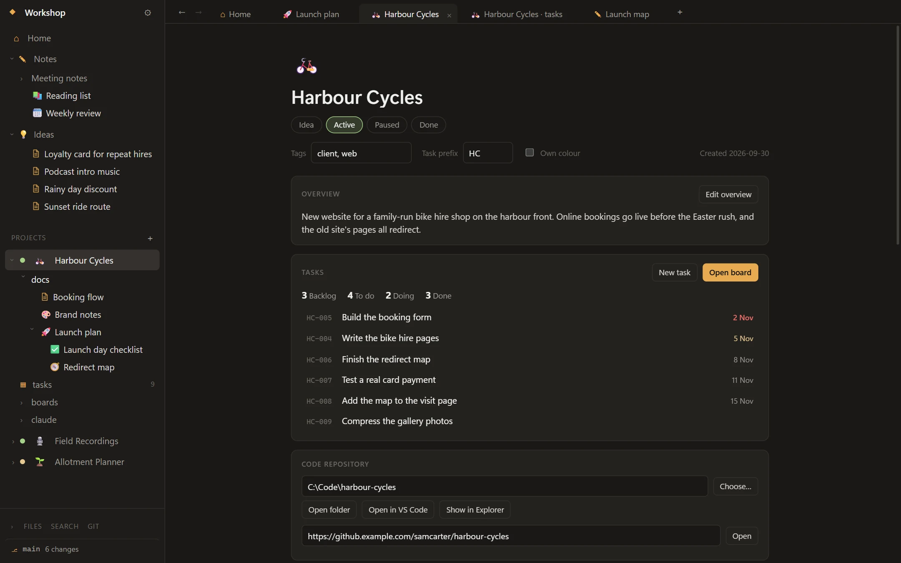
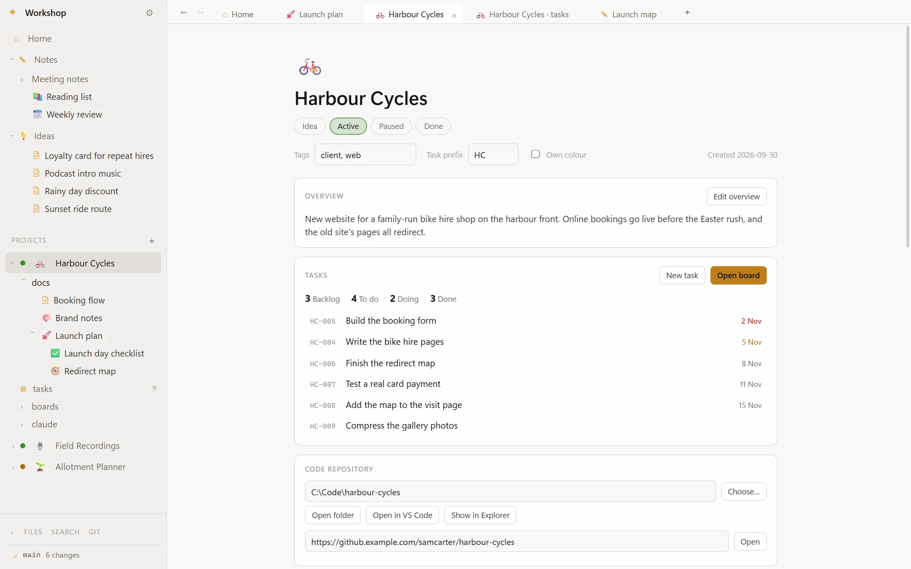
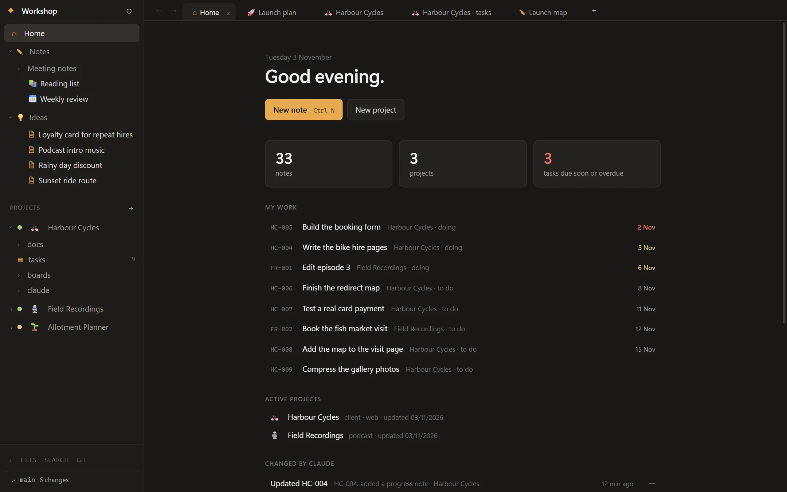
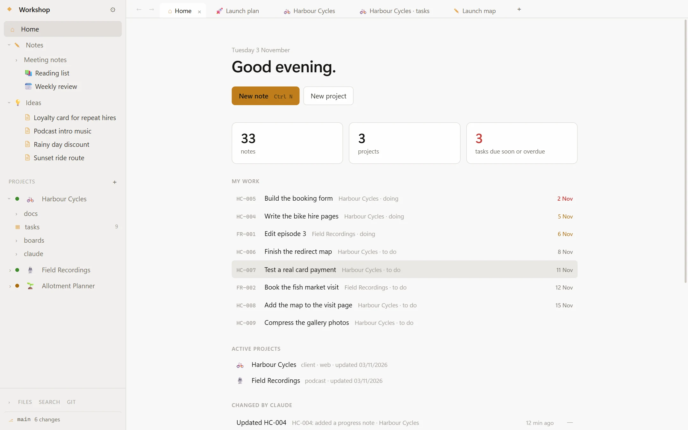
projects/harbour-cycles/tasks/HC-005.md
Track tasks on a board and keep them as files
Drag cards from Backlog to To do, Doing and Done. Each task is one Markdown file, with its fields in frontmatter and your notes underneath.
- IDs are prefixed per project, like HC-005.
- Tasks have priorities, due dates and labels.
- Switch between the board and a sortable list, and filter either one.


--- id: HC-005 title: Build the booking form status: doing priority: urgent due: 2026-11-02 labels: [bookings] created: 2026-10-19 --- Dates, bike, deposit. Must work one-handed on a phone.
projects/harbour-cycles/boards/Launch map.excalidraw
Think it through on a canvas
Each project can hold Excalidraw boards, saved as you draw. Add a note or task as a card, and its link icon opens the real thing.


.git/
See every change to every note
Turn on versioning from the sidebar, then commit, pull and push without leaving the app. Waypoint uses the git you already have installed, so your credentials just work.
- Open the history and diffs of one note, or of the whole vault.
- Auto-commit on a timer if you want it. It's off by default.
- Daily zip backups to a folder you choose, also optional.
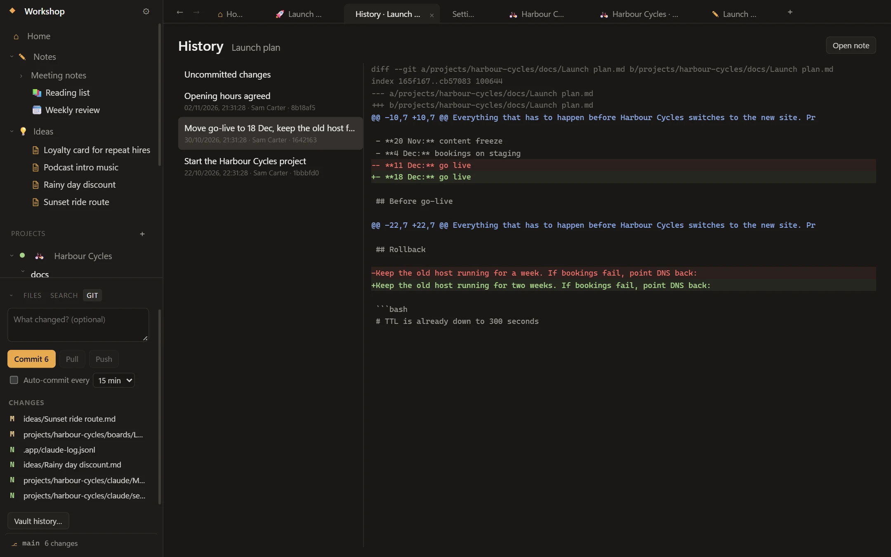
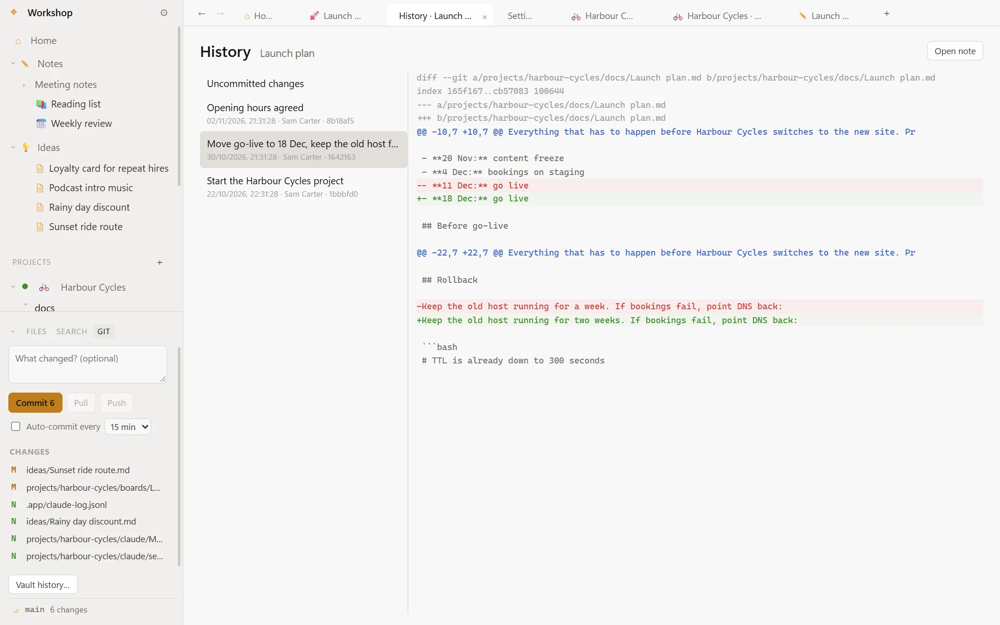
ideas/
Catch ideas from anywhere in Windows, and get prodded about the rest
Press Ctrl+Alt+W in any app and a small box opens. Type a thought, press Enter, and it's a new note under Ideas.
- Jump list. Right-click the taskbar icon for recent notes, New note and Quick capture.
- Tray. Closing the window keeps Waypoint running, so the hotkeys and nudges still work. It can start with Windows too.
- Search from anywhere. Ctrl+Alt+F opens a search box over whatever you're doing.
- Nudges. Overdue tasks, tasks due soon and projects gone quiet get a banner in the app or a Windows notification. You set the hours and how often, and you can snooze them.


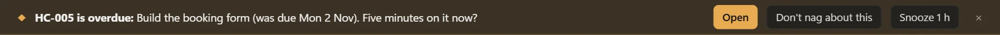
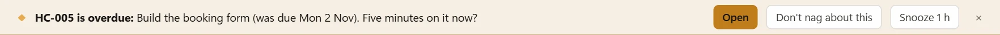
.app/claude-log.jsonl
Connect Claude Code if you use it
This part is optional. Waypoint never calls Claude itself, and every feature works without it.
If you use Claude Code, the installer already includes an MCP connector that runs on your PC, so there's nothing extra to install. Set a project's repo folder and press Connect to Claude Code. Sessions in that repo can then see the project, in the terminal or the desktop app's Code tab.
- What Claude can do. Search and read your notes, create and update tasks, edit docs, and rename or move files with links kept up to date.
- Send to Claude. Start a session on a task from its card or the open task.
- Project memory. Claude keeps its notes and dated session logs as ordinary notes you can read.
- Changed by Claude. Every change is listed in a feed, and you can undo it from there.
- No deleting. The connector has no way to delete anything.

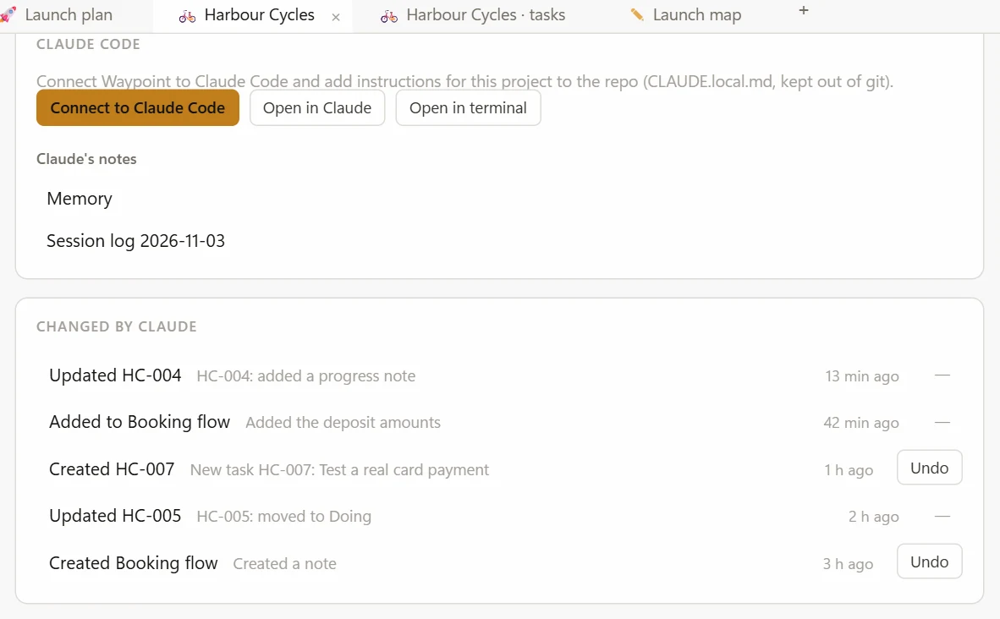
config.json
Make it look how you like
Choose dark, light or follow Windows. Pick one accent colour and Waypoint works out the rest of the palette. Any project can have its own colour, so you can tell at a glance where you are.
You can also change the fonts, note text size and interface scale, and give any note or project an emoji or picture as its icon.
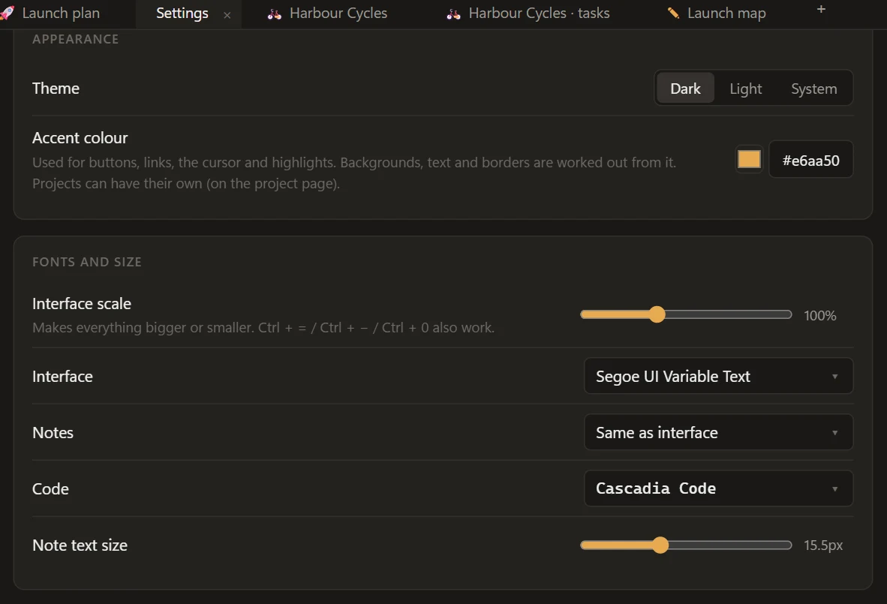
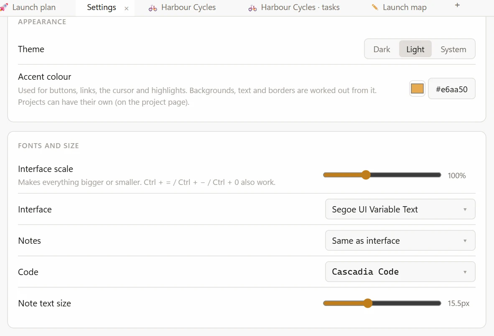